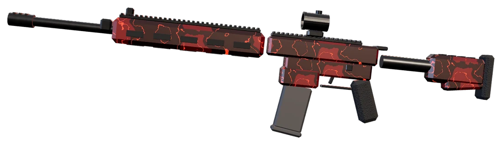
Zone Rouge
Épique3 000 $
Finisher : Foudre écarlate
Les vraies statistiques du jeu, les collections de skins avec leur couteau et leur finisher, les camouflages et les atouts. Tout se gagne en jouant.
Pistolets, mitraillettes, fusils, pompe, mitrailleuse et fusil de précision : chacune a son profil. Clique, ou utilise les flèches du clavier.
Pistolet semi-automatique fiable. Léger et rapide à dégainer.
Gros calibre : deux balles suffisent, une seule dans la tête à courte portée.
Mitraillette nerveuse, idéale au corps à corps et en mouvement.
Cadence infernale et gros chargeur. Fond comme neige à longue distance.
Fusil d'assaut polyvalent, précis et facile à contrôler.
Tire des rafales de 3 balles : une rafale complète élimine.
Fusil d'assaut lourd : trois balles pour éliminer, mais un recul sauvage.
Fusil à pompe dévastateur à courte portée. Inutile au-delà de 20 m.
Chargeur de 100 balles pour tenir une position. Lourde et lente à épauler.
Fusil de précision à verrou. Une balle dans le torse suffit.
Une élimination par coup. On court plus vite couteau en main.
Chaque collection habille un fusil, offre son propre couteau et un finisher pour fêter l'élimination. Chacune se décline en trois couleurs.
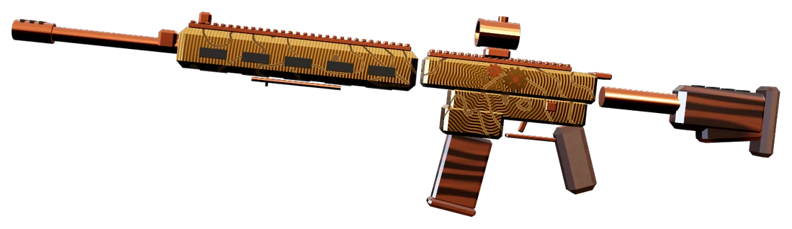
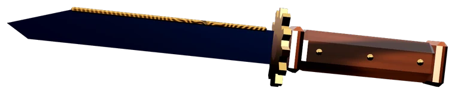
Laiton gravé, bois verni et engrenages qui tournent : une arme d'horloger du siècle dernier.
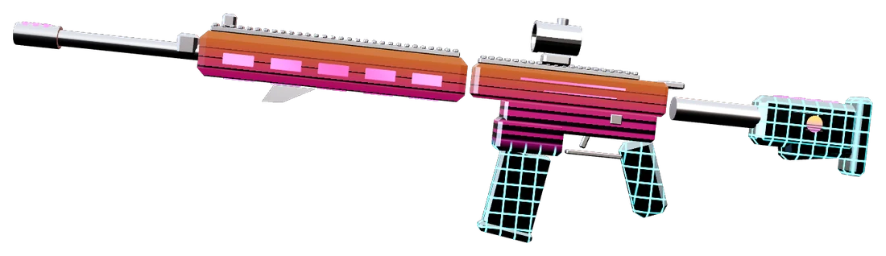
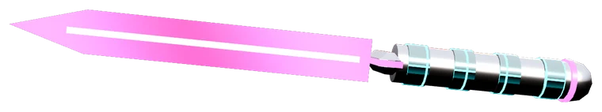
Chrome, coucher de soleil et grille néon qui défile : tout droit sorti d'une borne d'arcade de 1984.
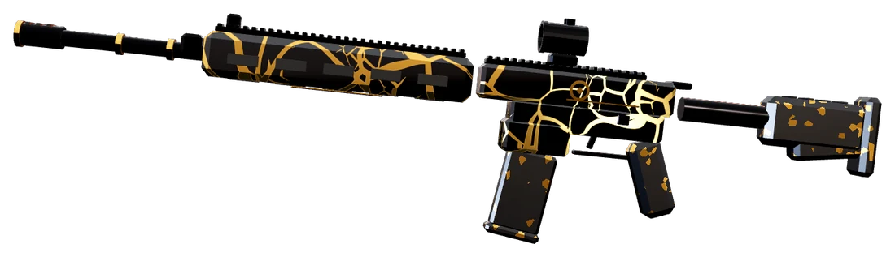
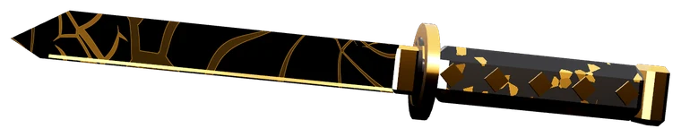
De l'obsidienne polie réparée à l'or fondu : une lumière liquide court dans chaque fissure.
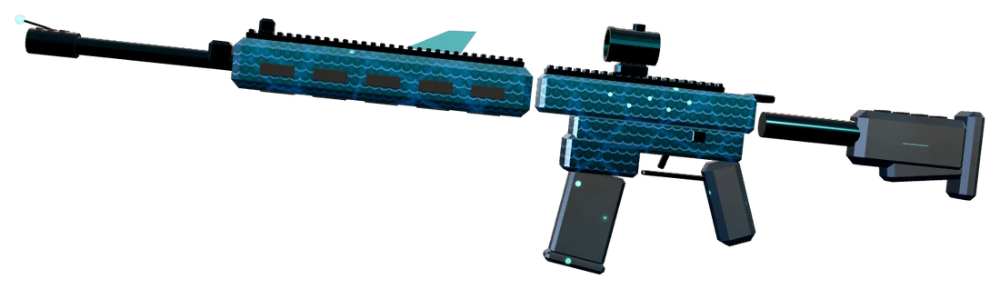
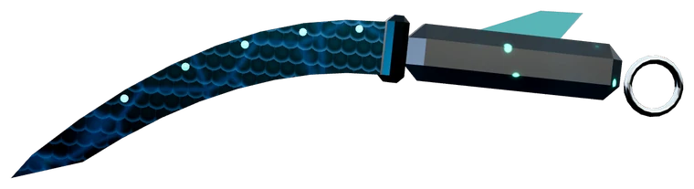
Écailles des grands fonds, nageoires et lueurs bioluminescentes qui respirent dans le noir.
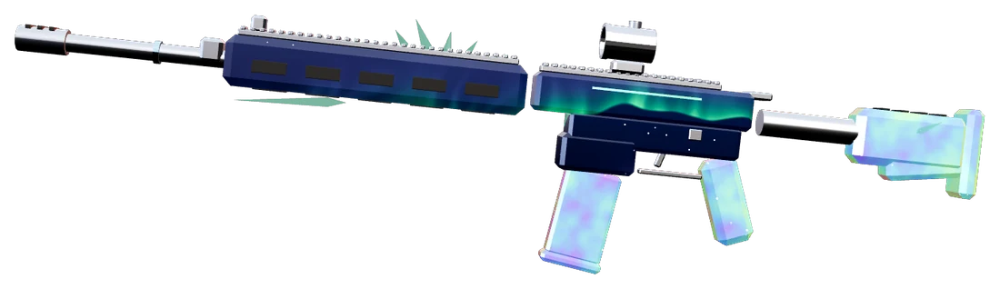
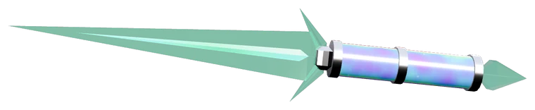
Un ciel polaire étoilé où ondulent des rideaux d'aurore, de la nacre givrée et des cristaux de glace.
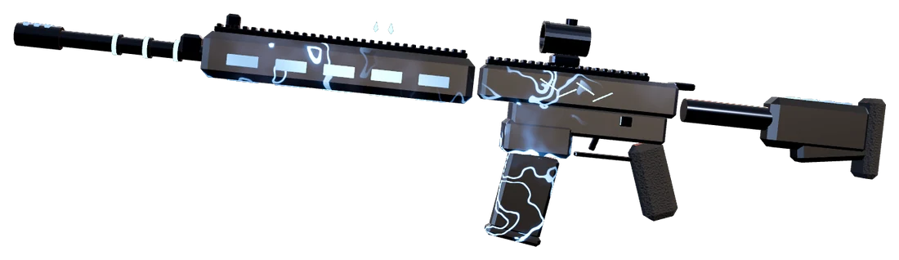
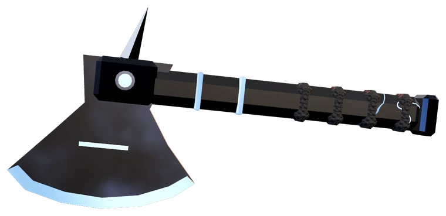
Un orage enfermé dans l'acier : nuages en mouvement, éclairs qui rampent et noyau d'énergie.
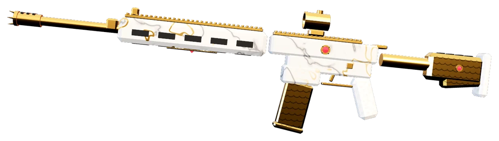
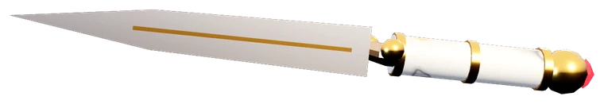
Marbre veiné d'or, filigranes ciselés et pierres précieuses serties : une arme digne d'un trône.
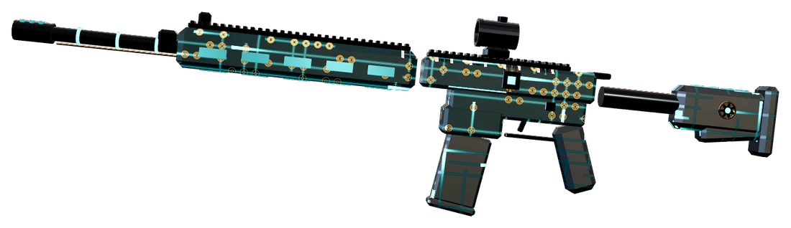
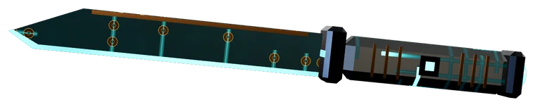
Un circuit imprimé vivant : pistes de cuivre, puces et impulsions de données qui filent sur l'arme.
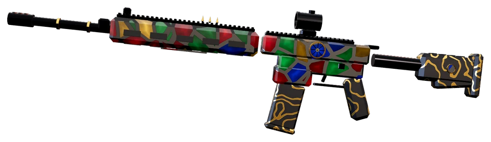
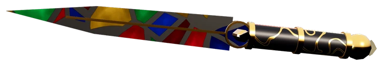
Des éclats de verre colorés sertis de plomb, comme une rosace de cathédrale traversée par la lumière.
Les skins s'achètent avec l'argent gagné en partie. Deux collections, Circuit et Vitrail, sont des récompenses du passe de combat gratuit.
Les camouflages classiques se posent sur n'importe quelle arme. Les plus rares ajoutent un finisher.

Finisher : Foudre écarlate
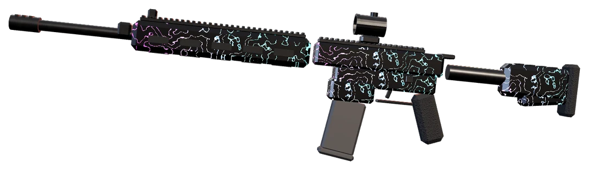
Finisher : Dissolution néon
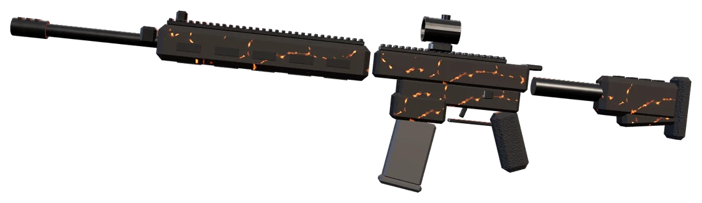
Finisher : Combustion
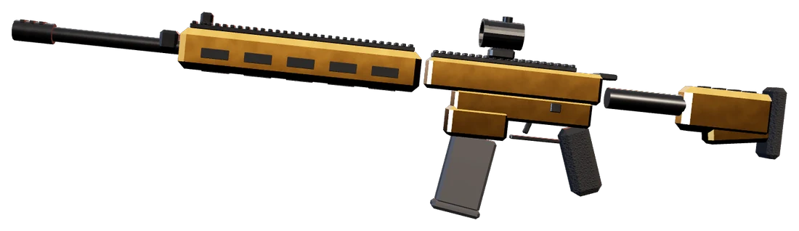
Finisher : Pluie d'or
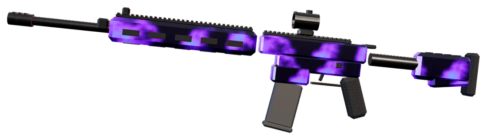
Finisher : Trou noir
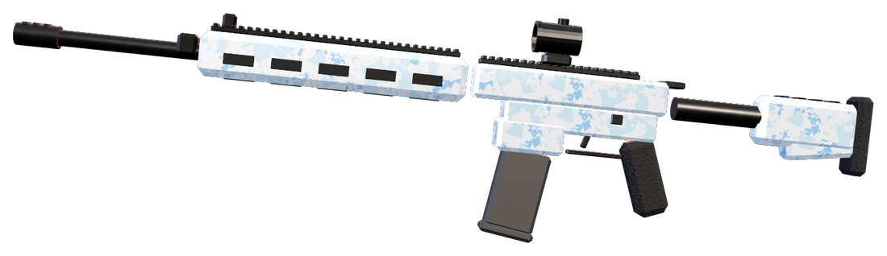
Finisher : Éclats de diamant
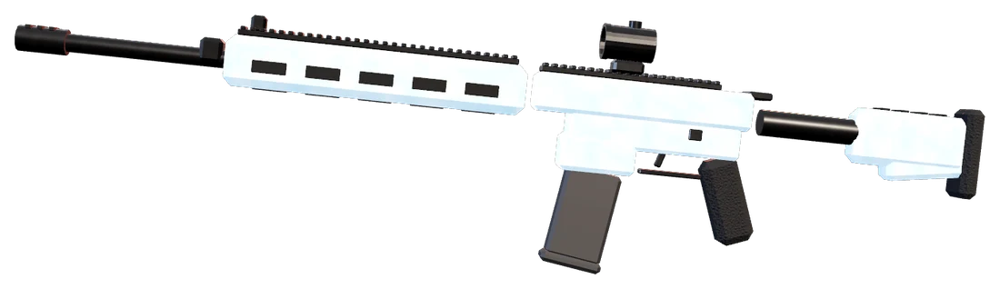
Finisher : Gel instantané
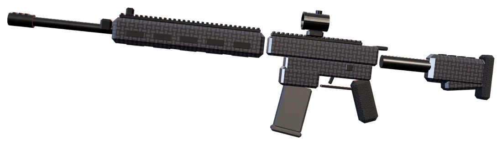
Sans finisher
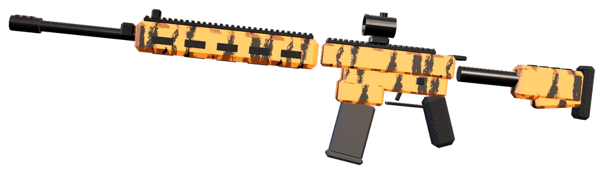
Sans finisher
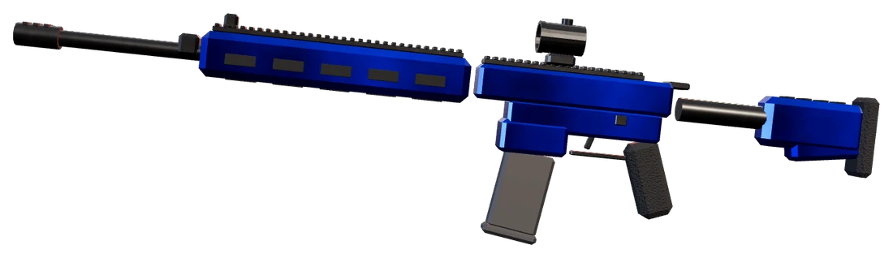
Sans finisher
Un atout par partie, à choisir avant d'y entrer. Il change la façon de jouer, sans rendre personne invincible.
+12 % de vitesse de sprint et tir plus rapide après un sprint.
1 200 $Rechargement 35 % plus rapide.
1 500 $La santé commence à se régénérer deux fois plus tôt.
1 800 $Deux grenades à chaque apparition au lieu d'une.
1 000 $Invisible sur le radar ennemi, même en tirant ou face au drone.
2 000 $+50 % de munitions de réserve.
800 $Gratuit, sans compte, et mis à jour tout seul. Tes potes Windows, Mac et Linux jouent dans les mêmes parties.